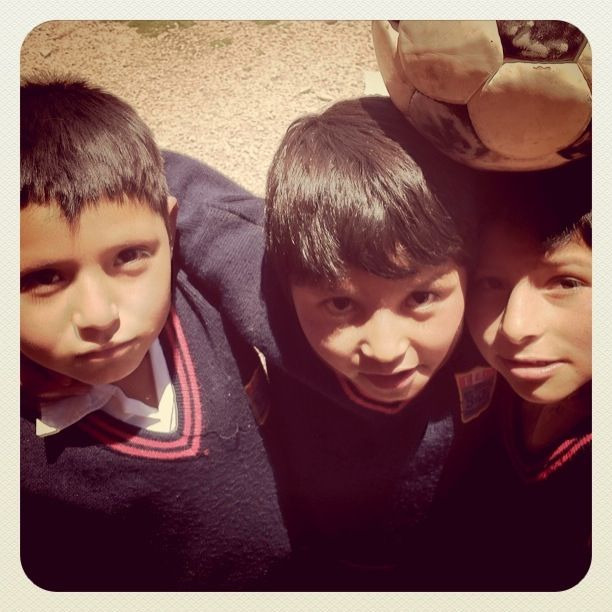

Sun, 07 Nov 2010 16:49:54 · peru · travel · cusco · city · photography
my students in santa ana a small town near cusco

My students in Santa Ana, a small town near Cusco, Peru.
• Taken with iPhone 4
Sun, 07 Nov 2010 16:49:54 · peru · travel · cusco · city · photography

My students in Santa Ana, a small town near Cusco, Peru.
• Taken with iPhone 4